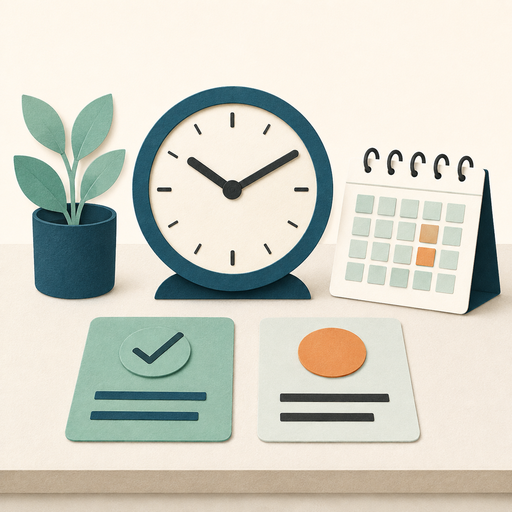
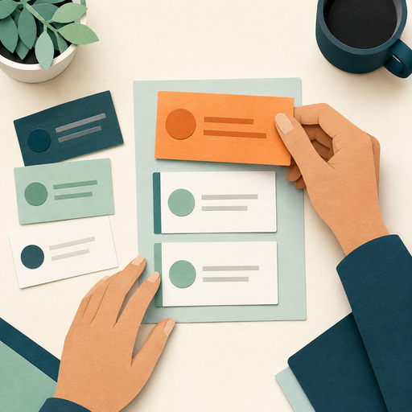

Time Management
The process of planning and exercising conscious control of time spent on specific activities, especially to increase effectiveness, efficiency, and productivity.
Time management and prioritization work together.

The process of planning and exercising conscious control of time spent on specific activities, especially to increase effectiveness, efficiency, and productivity.
A decision-making process that determines the order and focus of your tasks and activities based on their relevance and urgency.
Time management helps you decide how to use your available time. Prioritization helps you decide what deserves that time and attention. Together, they help you focus your effort on what matters most.
Effective time management and prioritization support leaders and teams.
Benefits for leaders and teams
Increased productivity
Better decision-making
Reduced stress
Improved time allocation
Better work-life balance
Clear direction
Enhanced morale
Increased accountability
Improved collaboration
Think about your own work and select the task that deserves focused attention because it is most relevant or urgent, even when your schedule includes lower-value work.

These strategies will be developed in later lessons. Click the flip cards to explore each option.